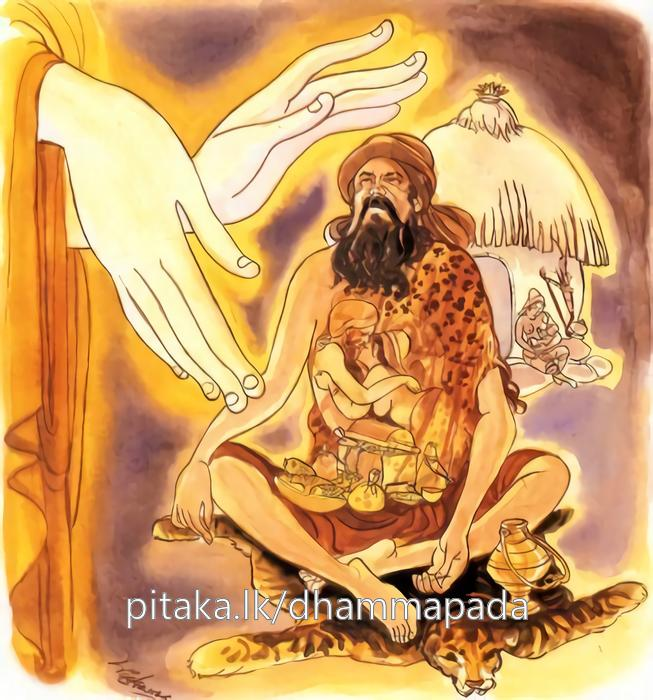

26-11 කුහක බමුණෙක්
මෙම කතාව ධම්මපද අටුවාවෙන් ද කියවන්න.
කිං තෙ ජටාහි දුම්මෙධ කිං තෙ අජිනසාටියා
අබ්භන්තරං තෙ ගහණං බාහිරං පරිමජ්ජසි.
අනුවණය, තගේ ජටායෙන් කවර වැඩෙක් ද? තගේ තෙල අඳුන් දිවිසමින් කවර වැඩෙක් ද? තගේ ඇතුළත කෙලෙසුන්ගෙන් ගහණ ය. එතෙකුදු වුවත් (ඇතුළත නො ව) පිටත ම සිලුටු කරන්නෙහි ය.

වවුල්වත රැකි එක්තරා කොහොන් බමුණෙක් විසල් පුර දොරටුවෙහි කුඹුක් ගසකට නැගී දෙපයින් එහි අත්තක් අල්ලා ගෙණ යටලු හිස් ඇති ව එල්බ ගෙණ “මට කිඹුල්වන් දෙනුන් පන්සියයක් දෙවු, මට කහවණු දෙවු, මට සේවිකාවක දෙවු, ඉදින් නො දෙන්නහු නම් මෙයින් පැන මැරී මෙ නුවර පාලු කරන්නෙමි”යි කිය යි. මේ අතර භික්ෂු සඞ්ඝයාත් පිරිවරා ගෙණ බුදුරජුන් නුවරට වදනා වේලෙහි බුදුරජුන් හා එක් ව ගිය භික්ෂුන් වහන්සේලා නුවරට වදනා වේලෙහිත් නුවරින් නික්ම එන වේලෙහිත් එසේ වවුලකු මෙන් එල්බ හුන් ඒ කොහොන් බමුණු දුටහ. නුවර වැස්සෝ ද උදෑසන පටන් එසේ දෙපයින් කුඹුක් අත්ත එල්බ හුන් බමුණා බිම ඇද වැටී නුවර පාලු කරන්නේ ය, යි සිතා නුවර නැසී යේ ය, යන බියෙන් ඌ ඉල්ලූ හැම දැයක් ම දුන්හ. ඉන් පසු කොහොන් බමුණු ගසින් බැස ඒ දුන් සියල්ල ගෙණ ගියේ ය.
භික්ෂූන් වහන්සේලා වෙහෙර සීමායෙහි දී දෙනක හඬන්නා සේ හඬ හඬා යන බමුණු දැක හැඳින “බමුණ! තා ඉල්ලූ දැය ලද දැ?”යි ඇසූහ. “එසේය, ලදැ”යි කී විට උන්වහන්සේලා විහාරයට ගොස් එ පුවත බුදුරජානන් වහන්සේට සැල කළහ. “මහණෙනි! මේ මිනිහා කුහක හොරකු සේ හැසිරෙණුයේ අද පමණක් ම නො වේ. මෙ තෙමේ පෙරත් කුහක සොරෙක් ව ම හැසුරුණේ ය, දැන් මොහු මෙසේ මිනිසුන් රවටන්නේ ය, අද මෙන් එදා මොහුට නුවණැති මිනිසුන් රවට ගන්නට නො හැකි වී ය”යි වදාරා ඒ ඉකුත් පුවත ද දක්වා වදාළ සේක.
“යට ගිය දවස කසීරට එක් ගමක් ඇසුරු කොට කුහක තවුසෙක් විසී ය, එ ගම එක් පවුලෙක් ඔහුට උපස්ථාන කෙළේ ය, එහි දාවල කෑමට පිළියෙල කරණ කෑම බීම්වලින් කොටසක් තම පුතුනට දෙන්නා සේ ඔහුට දෙන්නේ ය, සවසට පිළියෙල කරණ බතෙන් මාලුයෙන් කොටසක් තබා පසුදා උදෑසන දෙන්නේ ය, දවසක් ඒ ගෙදර වැස්සෝ තලගොයිමසක් ලදින් එය හොඳට දුරු මිරිස් යොදා පිස එයින් කොටසක් අරගෙණ තබා පසුදා උදෑසන ගොස් තවුසාට දුන්හ, තවුසා තලගොයි මස් කාලා රසයෙහි බැඳී ‘මේ මස් මොනවා දැ’යි ගෙදර වැස්සන් අතින් ඇසී ය, ඔවුහු ‘තලගොයි මසැ’යි කීහ, පසුදා තවුසා පිඬු සිඟා ගොස් ගිතෙල්, දී, ලුනු, මිරිස්, කුළුබඩු සපයා ගෙණ වුත් තමන් වසන පනසල් කිලියෙහි තබා වටපිට බලමින් හුන්නේ ය, එ වේලෙහි පන්සල අද්දර තුඹසෙක වසන තඩි තලගොයෙක් විටින් විට තවුසා වඳින්නට මෙන් පන්සලට බඩ ගා එන්නට පුරුදුව සිටියේ ය, තලගොයි මස් කා තලගොයි මස් රසෙහි බැඳී හුන් තවුසා තලගොයා මරන්නට සිතා පොලු කෑල්ලක් සඟවා තබා තුඹසට නො දුරෙහි තැනෙක නිදන්නකු සේ රැඳී සිටියේ ය, තුඹසෙන් නික්ම පන්සල පැත්තට බඩ ගා ඇදී යන ගොයා තවුසාගේ විලාශය දැක තමා මරන්නට සිතා තවුසා සූදානම් ව හිඳින බව වැටහීමෙන් එහි ම රැඳුනේ ය, තවුසා ද ගොයා ඉදිරියට නො ගොස් එහි ම රැඳෙනු දැක ගොයා මරන්නට සඟවා තුබූ පොලු කෑල්ල ගෙණ ගොයාට දමා ගැසී ය, එහෙත් එය අන් තැනක වැටුනේ ය, ගොයා ද තුඹසට වැද සැඟ වී සිට හිස තුඹසෙන් මදක් එළියට දමා ආපසු බලා,
“මහණැ යි සිතා මම් - නො හික්මුනු තා වෙත පත්,
තෝ නො මහණකු සේ දැන් - ගැසුවෙහි දඬින් ඒ මට,
.
දුමෙද! කිම තාගේ - දළමඬුලු දිවිසම් කඩ?
තා සිත කෙලෙසි බිහිලී - පිටත තෝ පිරිමදිහී”
යි තවුසාට එල්ල කොට කී ය, ඉක්බිති තවුසා එයසා තමා සතු දැයෙකින් ගොයා පොළඹවා ගන්නට සිතා,
“ගොයිරදුනි! මෙහි එව - තෙල් ලුනු තිප්පිලි යොදා,
මැනැවින් සකස් කළ බෝ - රසැති ඇල්බත් වළඳවු”
යි කියා පෑයේ ය, ඒ ඇසූ ගොයා ‘තවුස! තා මෙසේ කියත් ම මට තා වෙතින් පලා යන්නට ම සිතේ ය’යි කියා නැවැත,
“බඩ සයින් ගැඹුරූ - තුඹසට ම මම වදිමී,
මට නො සැප වූ තෙල් ලුනු - තිප්පිල් ඇතැයි කියහී”
යි කියා නැවැතත් මම මෙතෙක් කල් තා මහණකැයි ගණන් ගෙණ සිටියෙමි, තෝ දැන් මා මරා කන්නට දඩු කඩක් දමා ගැසූයෙහි, ඒ දඬු කඩ දමා ගැසූ තෝ මහණෙක් නො වූ යෙහි, තා වැනි ගොනකුට දළමඬුලෙන් ඛුර සහිත අඳුන් දිවිසමෙන් ලැබෙන ප්රයෝජනය කුමක් ද? තාගේ ඇතුළත කෙලෙස්වලින් පිරී ගත්තේ ය, හුදෙක් පිටත ම ඔපලන්නෙහි ය, යි කීයේ ය.
බුදුරජානන් වහන්සේ මෙසේ මේ යට ගිය කතාව ගෙණ හැර පා “අද මේ කුහක බමුණා, එදා ඒ කුහක තවුසා ය, එදා ඒ තලගොයා මම වෙමි”යි ජාතකයක් ගළපා එදා ගොධ පණ්ඩිතයා විසින් ඔහුට සඞ්ග්රහ කළ කරුණු දක්වන සේක් මේ ධර්මදේශනාව වදාළ සේක.
කිං තෙ ජටාහි දුම්මෙධ! කිං තෙ අජිනසාටියා,
අබ්භන්තරං තෙ ගහනං බාහිරං පරිමජ්ජසීති.
අඥය! තට දළමඬුලෙන් කුමන ප්රයෝජනයෙක් ද, තට අඳුන් දිවිසමෙන් කුමන ප්රයෝජනයෙක් ද, තාගේ ඇතුළත කෙලසුන් ගෙන් ගැවසී ගත්තේ ය. (තෝ) පිටත පිරිමදිනෙහි ය.
කිං තෙ ජටාහි දුම්මෙධ! = අඥය! තට දළමඬුලෙන් කුමන ප්රයෝජනයෙක් ද.
සියුම් ධර්මාර්ත්ථයන් දන්නා නුවණත් කෙලෙසුන් හිංසා කරණ නුවණත් නැතියේ ‘දුම්මෙධ’ නම්. [1]
කිං තෙ අජිනසාටියා = තට අඳුන් දිවිසමෙන් කුමන ප්රයෝජනයෙක් ද.
අබ්භන්තරං තෙ ගහනං = තාගේ ඇතුළත කෙලෙසුන්ගෙන් ගැවසී ගත්තේ ය.
බාහිරං පරිමජ්ජසි = පිටත පිරිමදිනෙහි ය.
“පවිටු තවුස! මම තා ගුණවතෙකැයි සිතා තා වෙත පැමිණියෙමි. එහෙත් තාගේ කිසි තැනෙක ගුණයෙක් නැත. තා වැනි කිසිත් ගුනයක් නැති පවිටුන් විසින් දරණු ලබන දළමඬුලෙන් ඇති ප්රයෝජනයෙක් නැත, තා හඳනා ලද නිය සහිත අඳුන් දිවිසමින් ඇති ප්රයෝජනයෙක් නැත, තාගේ ඇතුළත රාගාදී වූ සියලු කෙලෙස් වලින් පිරී ගත්තේ ය, එසේ වූ තෝ දළමඬුලු අඳුන් දිවිසම් ඈ තවුස් පිරිකරින් පිටත ම ඔපමට්ටම් කරන්නෙහි ය”.
ධර්මදේශනාවගේ අවසානයෙහි බොහෝ දෙන සෝවන් ඵලාදියට පැමිණියාහු ය.
කුහක බ්රාහ්මණ වස්තුව නිමි.
-
2-6 ‘දුම්මෙධිනො’ යනු බලනු. ↑